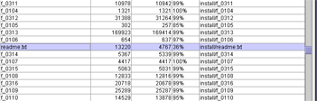
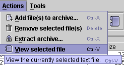
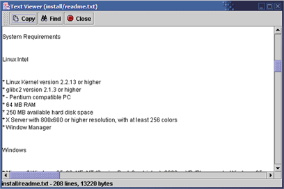

If an archive file contains a text file (for example, a README or license file), you can view it within Shrinkage without having to extract the whole archive. Shrinkage contains a built-in Text Viewer that can display the contents of a text file.
|  | 1. First, select the file that you wish to view. |
 |
2. Choose "View selected file" from the Actions menu. |
|  | 3. The Text Viewer window will open with the contents of the text file. You can copy text to the clipboard or search for text within the file |